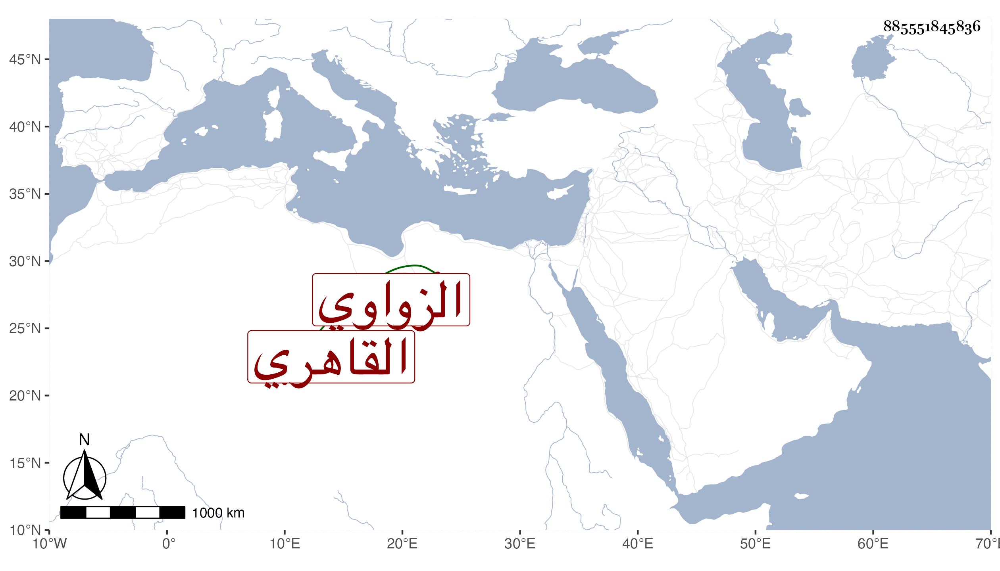

0902Sakhawi.DawLamic.ITO20230111-ara1.EIS1600.885551845836
Biography ID: 885551845836
1030
محمد بن أحمد بن سليمان بن نصر الله البدر أبو الخير بن الشهاب الزواوي القاهري الماضي أبوه وأخوه سليمان . ولد سنة ثمان وأربعين وثمانمائة ونشأ فحفظ القرآن والعمدة والمنهاج وجمع الجوامع والألفية وغيرها واشتغل قليلا وسمع علي وبقراءتي وبقراءة الديمي أشياء بل سمع مع أبيه على شيخنا في مسند أبي يعلى . ومات في شعبان سنة خمس وستين عوضه الله الجنة .
